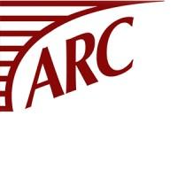

Jessica Joy
Data Scientist
Passionate data scientist with 3+ years of experience at EssenceMediacom, specializing in Marketing Mix Modeling and data-driven strategy. Currently pursuing MS in Data Science at Georgetown University. I am eager to expand my expertise, applying my analytical skills to solve complex challenges across industries. Let's connect!
Technical Skills


Professional Experience

EssenceMediacom
Senior Analyst, Data Science and Modeling
June 2021 – August 2024
- Developed end-to-end Marketing Mix Models (MMM) for major clients, improving data processing efficiency of 10M+ rows using Python, R, and SQL
- Constructed budget allocation tool using MMM outputs, optimizing media mix strategies and driving up to 30% increase in incremental revenue
- Provided strategic consultation to Dell using vision AI data and ML algorithms, analyzing 200+ variables to potentially increase KPIs by 130%
- Built database of 70+ marketing metrics for “Remarkability Index,” strengthening new business pitches and securing clients
Binghamton University
Economics Tutor
August 2019 – December 2019
- Provided one-on-one tutoring to Division 1 athletes in Microeconomic Theory and Macroeconomics
- Designed engaging activities to improve student comprehension and interest
- Collaborated with professors to prioritize key concepts and topics
CRC Group
Broker Intern
June 2019 – August 2019
- Analyzed and audited policies and endorsement data to ensure accuracy
- Streamlined quoting and binding processes, reducing processing time
- Conducted visits to insurance carriers and retail brokers for business insights

ARC Excess & Surplus
Insurance Underwriting Intern
August 2018 – December 2018
- Updated and managed underwriting data systems, ensuring timely analysis and decision-making for over 100 accounts
- Monitored and tracked policy transactions to ensure on-time issuance
- Facilitated communication between clients and underwriters for clear documentation
Education & Certifications
Georgetown University
MS Data Science and Analytics
Expected December 2025 | GPA: 4.00/4.00
- Leadership: Women in Data Science Leadership Committee
- Coursework: Probabilistic Modeling, Computational Linguistics, Advanced Data Visualization, Neural Networks
Binghamton University
BS Financial Economics
May 2020 | Major GPA: 3.78/4.00
- Study Abroad: Universidad Pontificia Comillas, Madrid, Spain
- Leadership: Alpha Epsilon Phi Treasury Committee, Helping Hand Project Founding Member
- Coursework: Econometric Methods, Economic Forecasting
NYC Data Science Academy
Data Science Fellow
January 2021 – April 2021
- Intensive data science bootcamp covering machine learning, statistical modeling, and data visualization
- Check out my blog!